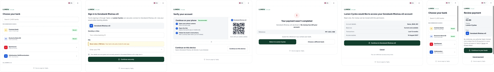
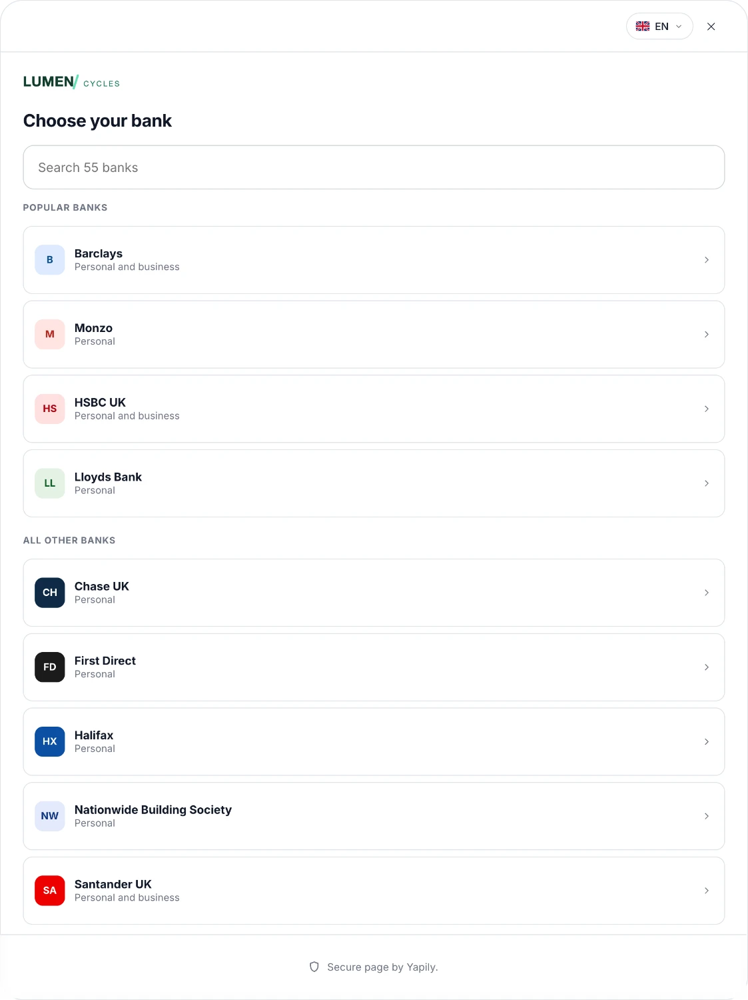
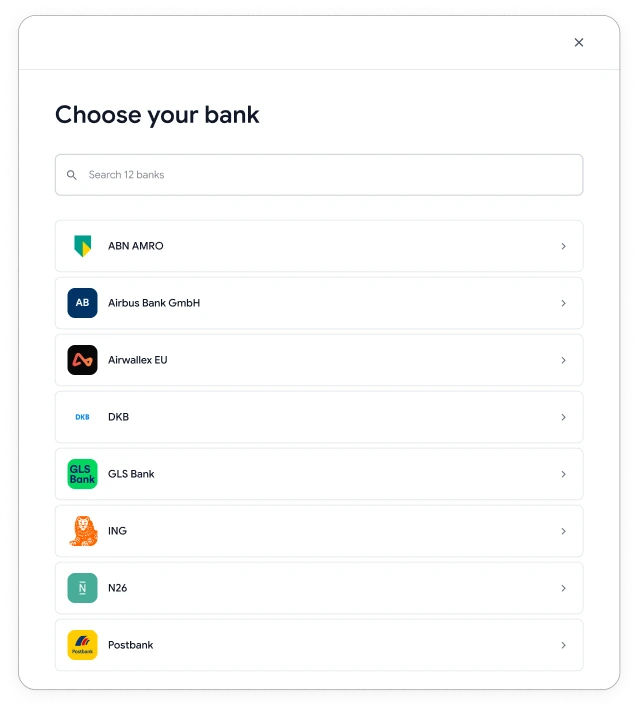
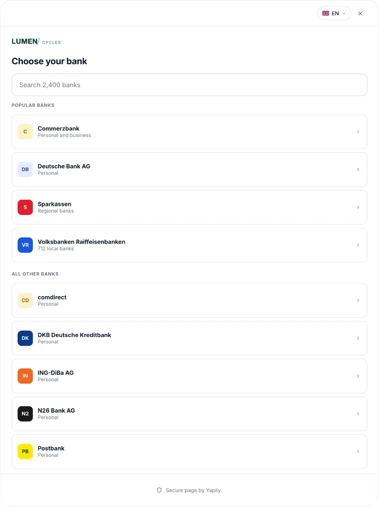
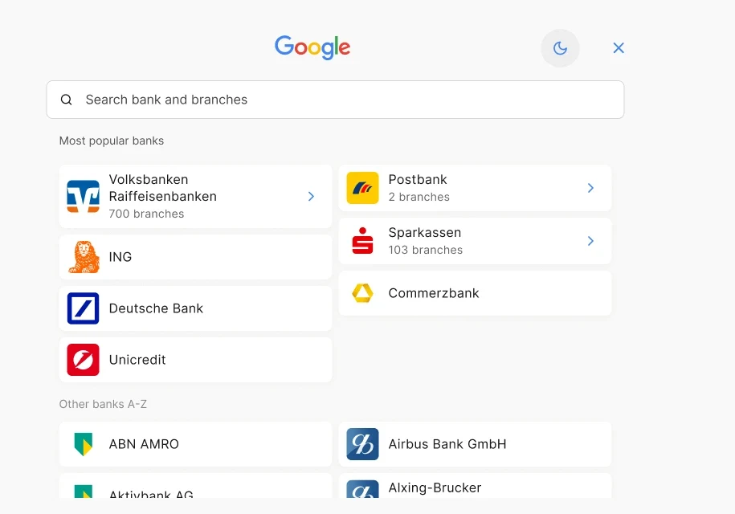
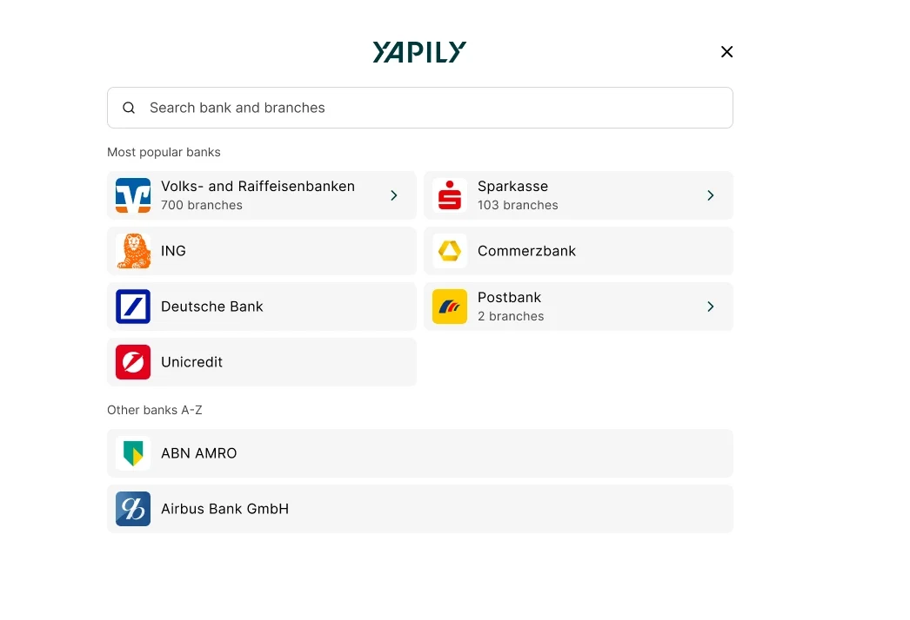
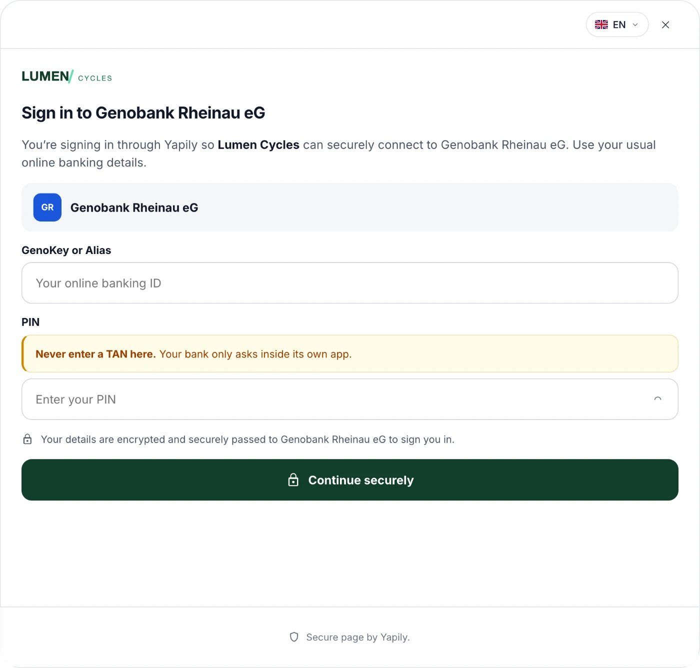
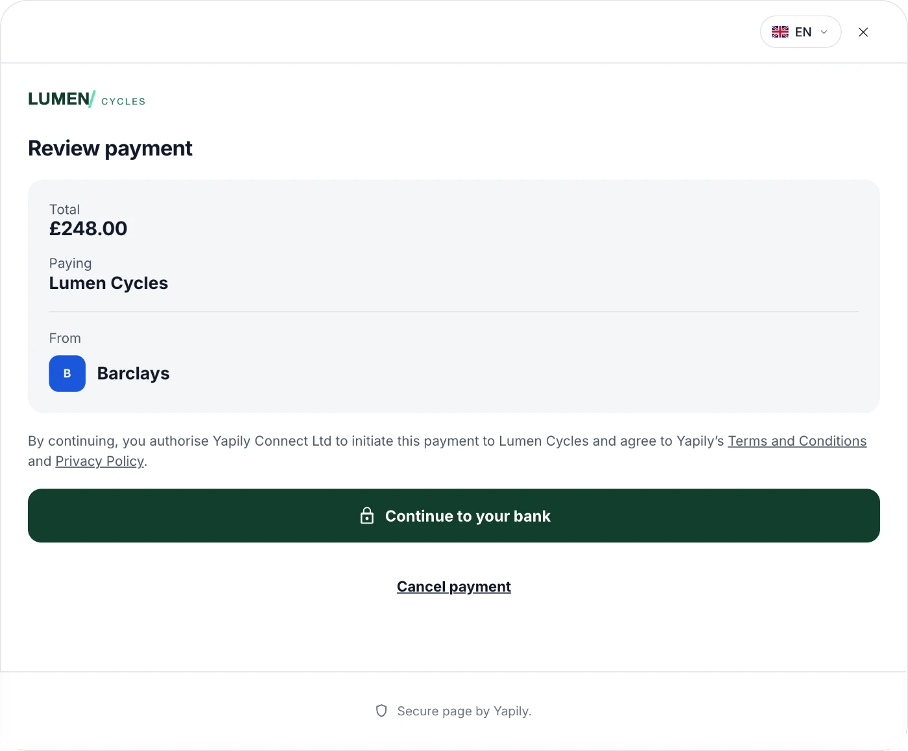

Yapily Hosted Pages
Yapily provides open banking infrastructure, connecting businesses to thousands of banks across the UK and Europe. Hosted Pages is Yapily’s white-label, pre-built consent and connection flow — letting customers launch payment and data-access journeys without building every bank-specific screen themselves.
AT A GLANCE
Summary
SITUATION
Yapily’s open banking API offered almost no abstraction, so customers built and maintained their own bank-connection and consent journey one bank at a time — across 1,500+ banks in 10+ countries at the time, since grown to over 2,000 across 19, each with its own consent flow, data quirks and certification requirements. A custom integration took four to six months in many European cases, and sometimes over a year. Around 80% of early customers were SMEs, so that cost decided whether they could adopt at all.
TASK
Working with the product manager, we first tried the cheaper fix — better guidance and documentation — which helped but didn’t change the underlying problem, because customers were still building bank plumbing instead of their own product. The idea of a widget and an embeddable checkout came out of that work rather than from anyone’s roadmap; the PM and I co-originated it. I then led the product strategy, research and design end to end at launch, within FCA guidelines, across two licensing models, ten-plus markets, multiple languages, and both payments and data — and have owned its evolution since, including the 2023–2026 usability research programme, the cross-functional workshops, and the resulting improvement roadmap.
ACTIONS
- Built the research and experimentation apparatus before attempting improvements, because the flow is generated at runtime from five decisions made before the user arrives — there was never one surface to redesign.
- Redesigned bank selection: grouped branches under parent brands, added a popular-banks shortcut, and changed display names to match what people call their bank rather than the name it registers under.
- Passed search-index gaps to engineering as a data problem rather than a screen problem, after sessions repeatedly showed aliases and old brand names returning nothing.
- Replaced API-passed language with an in-flow selector, after establishing that language cannot be inferred from country.
- Removed the QR handoff entirely in markets where app-to-app coverage was thin or banks presented competing QR codes; improved guidance and layout in the regions where it genuinely helped.
- Corrected embedded login: mapped fields to what each bank actually asks for, A/B tested trust signals including the customer’s own logo, and had engineering build per-bank retry behaviour to replace an assumed universal rule.
- Postponed a release to fix contrast failures and screen readers announcing raw SVG markup, rather than shipping and correcting afterwards.
RESULT
- Customer integration effort down from around four to six months — sometimes over a year for complex cases — to around two weeks.
- Used by 200 companies, from a customer base including Google, Adyen, Intuit, Ant Financial and Revolut.
- Time to find a bank down from 5–15 seconds to 1–3 seconds in most markets, and 3–5 seconds in branch-heavy markets like Germany.
- Embedded login conversion improved by roughly 13%; the decoupled handoff by roughly 10% in the regions where it was retained. Both directional, from overlapping production experiments rather than isolated tests.
- End-to-end conversion moved from around 20% in the 2023 beta to roughly 65–75% today, varying by use case and market — a platform-wide gain made by UX, frontend and backend together alongside expanding bank coverage, not a design result.
- In an unmoderated study of 21 testers in Germany, 62% preferred the new flow overall, rising to 78% among testers with disabilities.
Yapily’s customers were spending months building their own bank-connection and consent journeys, one bank at a time, and maintaining them afterwards. Around 80% of early customers were SMEs, so that cost decided whether they could adopt at all.
We productised the repeated part. Hosted Pages is a pre-built, white-label consent and connection flow customers configure rather than build. Integration went from roughly four to six months to around two weeks.
The hard part wasn’t the screens. The flow is generated at runtime from five decisions made before the user arrives, so there was never one surface to redesign. I built the research and experimentation apparatus first, then improved it in evidenced steps over three years.
The clearest design result is bank discovery: 5–15 seconds down to 1–3 in most markets.

Hosted pages user flows
A clickable prototype in two viewpoints. On a phone the bank’s app opens in place; on desktop the flow hands off to a phone by QR code and waits for it to come back.
Open the user flowsProblem
When I joined Yapily in 2020, one of the first things I did was talk to our customers. A pattern emerged fast. The API offered almost no abstraction, everything was raw, and integrating was slow and difficult. With 1,500+ banks across 10+ countries at that point, since grown to over 2,000 across 19, each with its own consent flow, data quirks and certification requirements. Building and maintaining a consent UI meant a full custom integration, sometimes six months to over a year. For some companies that was just more work than they could take on. Around 80% of our early customers were SMEs, so integration speed wasn’t a convenience; it decided whether they could adopt at all.
Working with the PM, we started with the cheaper fix: better guidance and documentation. It helped, but it didn’t change the underlying problem — customers were still building bank plumbing instead of their own product. That’s when we started talking about widgets and an embeddable checkout as a way to remove the integration work rather than document it.
A customer on abstracting the API Watch on YouTube. Opens in a new tab.My responsibility
I led the strategy and design end to end at launch, within FCA guidelines, and have continued to own the product’s evolution since, the 2023–2026 usability research programme, the prototype testing that followed, the cross-functional workshops, and the resulting improvement roadmap. I also lead my team’s work on this and related products from idea through to production. When a commissioned accessibility study found contrast failures and screen readers announcing raw SVG markup, meaning a screen reader user couldn’t navigate the flow, we postponed a release to fix both rather than ship and correct afterwards.
Constraints
The banks themselves couldn’t be standardised, each kept its own legacy consent flow and edge cases, outside Yapily’s control. Hosted Pages is FCA-regulated, so the flow had to meet open banking compliance guidelines throughout, not just at launch. It had to serve two different licensing models — customers under Yapily’s licence needing a fixed, compliant flow, and customers with their own direct licence wanting more flexibility to build their own surrounding experience — support multiple countries and languages, and work across Payments and Data.
One flow, more than forty versions of itself
Hosted Pages looks like four or five screens, but it isn’t.
Five decisions branch before the user sees anything, and each one multiplies the ones after it. Two of the five are set by the customer’s integration rather than by us, the licence they hold, and whether they passed an institution ID in the API call. The other three follow from the market, the device and the product: region and country across ten-plus markets, mobile or desktop, and payments, data or cVRP.
The grid isn’t rectangular, which is the harder problem. cVRP exists only in the UK, so the market dimension doesn’t multiply it. Hiding the consent sheet is available to customers on their own licence and to nobody else. A preselected institution on a direct licence skips every screen we make and goes straight to the bank. So the matrix has holes in it, and the holes aren’t symmetrical — you can’t write a rule that covers every cell, because some cells don’t exist and others exist only under one parent.
Then authentication branches again, and this is where the flow stops being ours at all.
Four models. A decoupled QR handoff from desktop to phone. A browser redirect. An embedded login where credentials are entered in our page. And, in Lithuania, the Netherlands and Sweden, only bank selection and then no screen from us at all, the flow hands straight off. Which of the four a given user gets is decided by their bank and their market, not by us and not by our customer.
The redirect path adds a further wrinkle: EU payments require additional information, and whether we show a screen to collect it depends on whether the customer included it in their API call. Same product, same market, same bank, different number of screens — determined by how carefully the integration was built. That’s one of the clearest arguments for why the documentation and the UX guidance were product work rather than support work: a customer who read them gave their users a shorter journey.
What this meant for how we worked
Three things follow from the shape above.
Prototype testing could only take us so far
You can’t usefully prototype a flow whose shape is chosen at runtime by someone else’s integration and someone else’s bank. It’s why the experimentation pipeline had to run against production traffic, and why the research programme ran with real people connecting real accounts rather than a panel working through a mock-up. The same constraint is why that programme wasn’t only testing usability. New markets and new bank integrations couldn’t be verified any other way either, so they went through the same channel — real users, real accounts, live.
Improvement had to be incremental
There was never a redesign available that fixed the whole surface, because there was never a whole surface, only a sparse matrix of paths, each of which had to be measured and improved on its own terms. Hundreds of variants across bank selection, the QR handoff and embedded logins, between 2023 and 2026.
Some of our screens were optional
Both the consent sheet and the QR screen can be switched off by customers on their own licence. Designing screens a paying customer is explicitly allowed to delete changes what the screen has to do, it has to earn its place in their flow, not just in ours.
Decisions
The decisions below, and a pattern that runs through all of them.
In each case what presented as an interface problem turned out to be a data or intelligence problem, bank names held in a search index, a regional capability we had assumed was universal, a retry limit we had invented rather than looked up. Research was often the part that found the problem rather than the part that fixed it, and the fix frequently belonged to engineering. That is the honest description of where design added value on this product, and it’s more useful than a set of before-and-after screens.
The flow itself is below, across payment and account access, desktop and mobile, including the failure states the happy path hides. The decisions that produced it follow.

Bank discoverability
Across the 2023–2026 usability sessions, search was consistently the primary way users found their bank rather than browsing, taking 5–15 seconds. Commissioned competitor benchmarking put the equivalent at 1–3 seconds, using brand grouping and a most-popular shortcut. Three changes came out of it, and only one was a layout change. We redesigned bank selection, grouped bank branches under one parent brand (critical in markets like Germany, where Sparkasse and Volksbank sit above thousands of sub-branches), and added a popular-banks shortcut. We changed the naming convention: we had been listing banks under the names institutions register under, and users recognise the name on their card and in their app instead, so we matched the display names to that. And we found gaps in our own search index, session after session, people typed aliases, informal names and old brand names that returned nothing. That went to engineering as a change to how search resolved queries rather than as a change to a screen.
Post-launch, time to find a bank came down to 1–3 seconds in most markets, and 3–5 seconds in the branch-heavy ones where the list is longest. That closes the gap the benchmarking opened: the first figure matches what competitors were achieving, and the second is the honest cost of markets like Germany, where even a grouped list has thousands of entries behind it.


A brand group opened is in the flow above — bank selection and a brand group ↗.
Layout for scale
Bank selection has to work in two conditions that pull in opposite directions. A customer connecting to a handful of institutions needs something compact. A customer facing a branch-heavy market needs to find one entry among hundreds. One layout optimised for either case fails the other.
An earlier round settled the basic form. We tested a grid against a list, and the grid lost for a reason that only surfaced in session: it couldn’t display full bank names, and because many institutions share near-identical icons, participants couldn’t reliably tell entries apart. The density a grid bought us cost more in ambiguity than it saved in scrolling.

Densest, and shortest in small portfolios, but tiles leave no room for a full bank name.

Shortcut grid above a full alphabetical list, the split that later became Popular banks.
Language assumptions
Language can’t be inferred from country, the person setting up account access often doesn’t live in, or speak the language of, the accountholder’s country. Passing country and language via the API still assumed the customer could predict the end user’s language in advance, so we moved to an in-flow selector in the header of every screen and let the actual user choose — see it on the mobile screens ↗.
Accessibility validation
Two studies did different jobs. A commissioned external audit identified approximately 94 changes across code, contrast and focus behaviour — contrast failures across multiple screens, and screen readers reading raw SVG markup aloud because alternative text hadn’t been implemented properly, which left the flow unnavigable by screen reader. We postponed a release to fix both rather than shipping and correcting afterwards, and I documented the findings for the frontend team to work from. A separate unmoderated study of 21 testers in Germany, including participants with disabilities, tested the new flow against the live demo. 62% preferred the new flow overall, rising to 78% among testers with disabilities. The study also surfaced that a screen reader user couldn’t navigate the old flow at all.
Returning users, and two optimisations fighting for the same space
A large share of our customers are PSPs and checkout providers, which means a large share of end users come back, same person, same merchant, often the same bank. They were repeating the full first-time journey every time, and customer feedback kept landing on it.
Working with product and with customers directly, we scoped what could reasonably be reused: pre-filling account details such as IBANs where the customer already held them, and surfacing recently used banks so selection could be skipped rather than repeated.
The first design had two blocks, recently used, then popular banks. It failed in a way that only became obvious once assembled. A bank could qualify for both, so the same logo appeared twice within a few rows. And the popular block, which existed to speed up first-time selection, got pushed down the screen by a feature built to speed up repeat selection. Two optimisations competing for the same real estate, each making the other worse.
We merged them into a single block — Recommended banks — with the most recent bank held in a dedicated slot at the top, popular banks filling the rest, and de-duplication so no institution appears twice. One component, both conditions, which is the same conclusion the layout testing had reached by a different route.
The harder problem was that the same screen has to serve customers who want opposite things from it. A customer running a KYC journey wants the bank locked, because the point is verifying one specific account and letting the user wander is a failure. An ecommerce merchant wants the reverse — default to the recent bank, but let the user get back to the full list. Both are correct for their use case, so neither can be the design; it has to be configuration.
This is in build rather than shipped, so there are no outcomes to report yet.
Both states are in the flow above: the first-visit block, and the same component with a recent bank promoted into the top slot — see bank selection ↗.
The decoupled flow, and the assumption underneath it
The decoupled flow starts on desktop, hands off to the bank’s mobile app, and comes back. It was built on an assumption: that mobile bank logins are more usable than desktop ones, so moving the user to their phone should improve completion wherever app-to-app is supported.
That makes it one of the two points in the flow with the most drop-off risk — handoffs are where people leave. The user has to pick up a second device, do something in an app we don’t control, and return to a browser tab they may have already lost. It’s also the step where the screen can give the least help, because for most of it the user isn’t looking at our screen at all.
Testing didn’t support the assumption, for two reasons.
Coverage. Outside the UK, app-to-app support was thin. Far fewer banks offered it than the design had assumed, so the flow was being applied to markets where the payoff largely didn’t exist.
Competing QR codes. In some markets, banks presented their own QR code inside their app. Users arriving at our QR screen were looking at two codes with no indication of which one to scan, or in which direction. That confusion showed up as drop-off.
So the change in those regions wasn’t a better-explained QR screen. It was no QR screen, we removed the step, and conversion improved.
In the regions where the handoff genuinely helped, the mechanism wasn’t the problem; knowing how to act on it was. We looked at established cross-device authentication patterns for reference, 3D Secure, and the phone-based sign-in used when installing apps on a TV. Both solve the same problem of making a device handoff feel deliberate rather than accidental, and both had conventions users had already learned elsewhere. We tested copy and layout variants against live traffic through the in-house experimentation pipeline. The version that won gave the user more guidance through the step and a clearer layout to carry it, and moved conversion in those regions by roughly 10%.
Neither change is a redesign. Both came out of running variants against real users rather than arguing about it internally. They were two of hundreds of experiment variants the programme worked through between 2023 and 2026, because when the screens are this constrained and the compliance requirements this fixed there is no single redesign available.
The screen that came out of it, and its mobile counterpart where there is no second device to hand off to, are in the flow above — see the handoff screens ↗.
Embedded login
The screen has to teach the user to distrust screens like this one. Entering bank credentials on a page that is neither the bank nor the merchant is structurally what a phishing attack looks like, and generic trust signals don’t address that specific harm. So the field where it would happen says it plainly: never enter a TAN or one-time code here, because the bank only ever asks for one inside its own app. It is the one line in the flow that tells the user to be suspicious of the flow.
Embedded login lets someone authorise a bank consent without leaving Hosted Pages. It removes the redirect, and with it, the reassurance of landing on a domain the user recognises. That trade sat at the centre of everything difficult about this flow.
Getting the fields right. Each bank expects specific credentials in a specific form, and our mapping of labels and inputs didn’t reliably match what users were being asked for elsewhere. Testing drove that mapping to accuracy, the right labels, the right inputs, matching what people saw in their own banking app. This had to be fixed before anything else was worth attempting; no amount of trust-building compensates for a form that asks for the wrong thing.
Trust. The harder problem: we were asking people to enter bank credentials into a page they didn’t recognise, for data they treat as highly sensitive. Once the fields were correct we worked on the surrounding signals, iconography, explicit wording identifying Yapily as a regulated open banking entity, and the customer’s own logo, anchoring the page in a brand the user already had a relationship with. The logo was A/B tested rather than shipped on judgement, and it earned its place. Embedded conversion improved by roughly 13% over the course of this work.
That didn’t solve the underlying problem. Asking someone to type bank credentials into an unfamiliar interface has a floor that visual design can’t lift on its own, and I’d be overstating the work to claim otherwise.
Retries. A quieter issue surfaced in testing. Our flows assumed three retries when someone entered credentials incorrectly, but banks didn’t agree with that assumption or with each other, and some allowed more. On SCA code entry the mismatch ran the other way: we permitted a single retry where the bank allowed several, so we were ending sessions the bank would have let continue. Testing surfaced the discrepancy; engineering built the mapping of per-bank retry behaviour so the flow could reflect what each institution actually permitted rather than a single assumed rule. That also improved conversion.
The flow could only ever be as accurate as our model of how each bank behaves, and that model was wrong in ways only watching real people could surface.


The same screens with the customer’s theme
Where a customer sets a brand, their logo and accent colour carry through every screen. Nothing in the structure moves: the same layout, the same wording, the same order of decisions.


How the customisation works
A customer configures six colour values in the Console, plus the brand assets. Nothing else about the screens is theirs to move: the layout, the wording and the order of decisions are fixed, because those are the parts carrying the regulatory obligations and the conversion work.
Two of the six were the design contribution. Brand colour previously reached only the primary button; extending it to icons and states is what makes a themed page read as the customer’s rather than as Yapily’s with a logo dropped in. Button text colour did not exist, so any dark-on-dark or light-on-light pairing shipped as a broken button — it is now a value the Console contrast-checks before it will save.
Every hosted screen is built from the same six values, so a change made once in the Console lands on bank selection, the embedded login, the handoff, the failure states and the consent screens at the same time.
Outcomes
Customer integration effort dropped from around six months, sometimes over a year for complex cases, to two weeks. Hosted Pages is used by 200 companies, drawn from a customer base that includes Google, Adyen, Intuit, Ant Financial and Revolut.
Conversion went from around 20% in the 2023 beta to roughly 65–75% end to end today, varying by use case and country. That gain was made incrementally over three years by UX, frontend and backend working the same problem from different sides, alongside expanding bank coverage, not by one redesign. In open banking a meaningful share of end-to-end conversion is infrastructure: bank API reliability, redirect success, coverage. I can’t give a clean percentage for design’s share of it, and I’d distrust anyone who could.
Where design was one of the levers, the movements were:
Those figures are directional and come from overlapping production experiments rather than isolated tests. Taken together the work improved end-to-end conversion across the flow; the individual numbers describe the size of a movement, not a clean attribution.
Reflection
Hosted Pages was originally built for customers using Yapily’s own licence, so the flow was fairly rigid by design. At the time that felt like the right trade-off, it kept the compliance surface small and got us to market fast. It was only once direct customers started onboarding and asking for more flexibility in their own consent experience that the limitation became clear. If I were starting the product again, I’d build more flexibility into the licensing model from day one, not because the original call was wrong given what we knew then, but because I’d now design for that need earlier rather than retrofitting it later.
Leadership
Set the research and product design direction for the programme that took Hosted Pages from MVP to general availability at the end of 2025, and for the usability, prototype and accessibility work that has continued through 2026. Led cross-functional workshops with frontend and design teams to scope the next roadmap. Worked with designers and product managers at Google over two years as they built their own open banking products on Yapily, the first year spent helping them build their own bank selection and authentication flows, after which they adopted Hosted Pages for account verification and for markets where the complexity made building it themselves uneconomic. Supported Yapily’s compliance team in preparing presentations to the FCA.